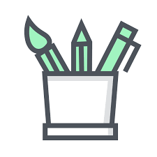

MY PORTFOLIO
Welcome to the portfolio of Mozahedul Bari
HOME
Description, April 7, 2014
We mortals dream too much about our future . We struggle day and night to fulfill our destiny , to make our home better. But sometimes we forget the fact that , "Where we lay down our head becomes the home and the earth is our throne" .
This is an ordinary portfolio of a humble human being , an enginnering student . Check out my portfolio and feel free to give some feedback on it so that I can make it better . That would be much helpful.
HOBBIES
Description, April 2, 2014
I am a freelance photographer . I like to take snaps of mother nature in my free time . Whenever I travel , I take my camera with me . I've got a huge album of photos which I captured with my phone and camera.
ABOUT ME
Hi there ! This is Mozahedul Bari . I am currently persuing my BSc. in Computer Science & Engineering at University of Asia Pacific . I am ambivert in nature . I like to play video games and research on music on my leisure time . Like to face new challenges and capture the world in my camera .
SKILLS
-
 HTML 5
HTML 5
Highly experienced in HTML 5 -
Game Developement
Passionate gamer and game developer -

Graphics Design
Dedicated graphics designer
Tags
Travel New York London Dhaka Bangladesh DIY Ideas Microprocessor Game Develeopement News Photography Gaming Grapgics Portfolio